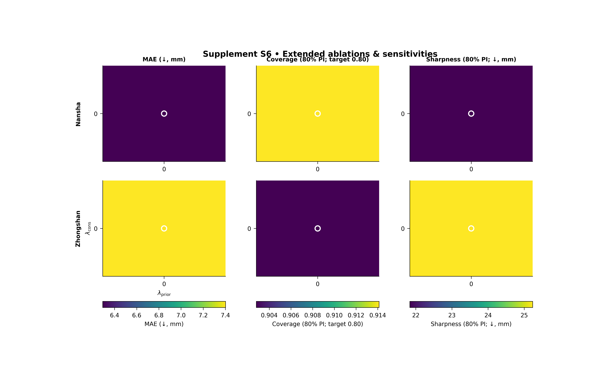

Note
Go to the end to download the full example code.
Ablations and sensitivities: learning where the model behaves well in lambda space#
This example teaches you how to read the GeoPrior extended ablations and sensitivities figure.
This figure is useful when you are no longer asking only:
“Did the model work?”
but also:
“Under which physics settings does it work well?”
“Is good performance concentrated in one fragile point, or spread across a stable region?”
“Do the two cities prefer the same lambda regime?”
That is why this figure matters. It is a design-space figure.
Instead of looking at a single trained run, we look across many runs whose physics weights differ.
What this figure can show#
The real script supports two broad display modes.
Map mode#
In map mode, the script plots one or more metrics over the \((\lambda_{cons}, \lambda_{prior})\) plane. It supports:
heatmapsmoothcontourtricontour
and can align the lambda grid across cities so missing cells stay blank rather than being silently shifted.
Pareto mode#
In Pareto mode, the script switches from lambda maps to trade-off scatter plots. It can show:
one panel per city,
a scatter of one metric against another,
points colored by a third metric,
an optional non-dominated front,
and an optional density-like hexbin backdrop.
Why this matters#
Ablation tables tell you whether a setting helped or hurt. Sensitivity maps go one step further: they show where good and bad regimes live in parameter space.
That means the reader can see:
whether the model is robust,
whether one city is easier to tune than another,
whether sharper forecasts come at the expense of coverage,
and whether a chosen lambda pair sits inside a stable basin or on a narrow ridge.
In this gallery lesson, we build a compact synthetic ablation table, run the real plotting command in map mode, and then learn how to interpret the result.
Imports#
We use the actual plotting entrypoint from the project script. So this page teaches the real command instead of a separate demo implementation.
from __future__ import annotations
import json
import tempfile
from pathlib import Path
import matplotlib.image as mpimg
import matplotlib.pyplot as plt
import numpy as np
import pandas as pd
from geoprior._scripts.plot_ablations_sensitivity import (
plot_ablations_sensivity_main,
)
Step 1 - Build a compact lambda grid#
We define a small grid in the two physics weights:
lambda_cons
lambda_prior
The real script reads ablation records from files, but for a gallery page it is clearer to build a tiny synthetic study first.
lambda_cons_vals = np.array([0.0, 0.1, 0.3, 1.0, 3.0])
lambda_prior_vals = np.array([0.0, 0.1, 0.3, 1.0, 3.0])
Step 2 - Create a synthetic ablation table#
We create two cities and one physics-on bucket:
Nansha
Zhongshan
The real script can also bucket pde_mode into “none” vs “both”, but for this lesson we focus on the sensitivity landscape inside the physics-on regime.
We synthesize several metrics:
mae
rmse
mse
r2
coverage80
sharpness80
epsilon_prior
epsilon_cons
The surfaces are designed so that:
Nansha prefers a moderate lambda regime,
Zhongshan prefers a slightly stronger prior weight,
and the “best” region is broad enough to teach stability.
rows: list[dict[str, float | str]] = []
for city in ("Nansha", "Zhongshan"):
for lp in lambda_prior_vals:
for lc in lambda_cons_vals:
log_lp = np.log10(lp + 0.12)
log_lc = np.log10(lc + 0.12)
if city == "Nansha":
mae = (
4.5
+ 2.3 * (log_lp + 0.30) ** 2
+ 1.7 * (log_lc + 0.20) ** 2
+ 0.10 * np.sin(1.5 * lp + 0.5 * lc)
)
sharpness80 = (
16.0
+ 5.5 * (log_lp + 0.15) ** 2
+ 7.2 * (log_lc + 0.35) ** 2
+ 0.15 * np.cos(1.3 * lc + 0.6 * lp)
)
epsilon_prior = (
0.28
+ 0.12 * (log_lp + 0.30) ** 2
+ 0.05 * (log_lc + 0.15) ** 2
)
epsilon_cons = (
0.22
+ 0.04 * (log_lp + 0.10) ** 2
+ 0.12 * (log_lc + 0.35) ** 2
)
else:
mae = (
5.0
+ 2.5 * (log_lp + 0.08) ** 2
+ 1.6 * (log_lc + 0.28) ** 2
+ 0.10 * np.sin(1.2 * lp + 0.4 * lc)
)
sharpness80 = (
17.0
+ 5.0 * (log_lp + 0.25) ** 2
+ 7.8 * (log_lc + 0.05) ** 2
+ 0.14 * np.cos(1.7 * lc + 0.5 * lp)
)
epsilon_prior = (
0.31
+ 0.14 * (log_lp + 0.10) ** 2
+ 0.05 * (log_lc + 0.20) ** 2
)
epsilon_cons = (
0.26
+ 0.05 * (log_lp + 0.22) ** 2
+ 0.14 * (log_lc + 0.08) ** 2
)
rmse = mae * 1.18
mse = rmse**2
r2 = np.clip(
0.94 - 0.045 * mae - 0.007 * sharpness80,
0.10,
0.96,
)
coverage80 = np.clip(
0.96
- 0.08 * epsilon_prior
- 0.06 * epsilon_cons,
0.65,
0.98,
)
rows.append(
{
"timestamp": "2026-03-28T12:00:00",
"city": city,
"model": "GeoPriorSubsNet",
"pde_mode": "both",
"lambda_cons": float(lc),
"lambda_prior": float(lp),
"mae": float(mae),
"rmse": float(rmse),
"mse": float(mse),
"r2": float(r2),
"coverage80": float(coverage80),
"sharpness80": float(sharpness80),
"epsilon_prior": float(epsilon_prior),
"epsilon_cons": float(epsilon_cons),
}
)
df = pd.DataFrame(rows)
print(df.head().to_string(index=False))
timestamp city model pde_mode lambda_cons lambda_prior mae rmse mse r2 coverage80 sharpness80 epsilon_prior epsilon_cons
2026-03-28T12:00:00 Nansha GeoPriorSubsNet both 0.0 0.0 6.269742 7.398296 54.734779 0.505514 0.914360 21.763894 0.355958 0.286050
2026-03-28T12:00:00 Nansha GeoPriorSubsNet both 0.1 0.0 5.747395 6.781927 45.994529 0.540683 0.917371 20.097770 0.339132 0.258302
2026-03-28T12:00:00 Nansha GeoPriorSubsNet both 0.3 0.0 5.454510 6.436322 41.426236 0.558665 0.918872 19.411777 0.328821 0.247036
2026-03-28T12:00:00 Nansha GeoPriorSubsNet both 1.0 0.0 5.539986 6.537183 42.734761 0.547512 0.917777 20.455514 0.328234 0.266075
2026-03-28T12:00:00 Nansha GeoPriorSubsNet both 3.0 0.0 6.305352 7.440316 55.358295 0.486231 0.912293 24.289697 0.346997 0.332461
Step 3 - Inspect the best lambda cells directly#
Before plotting, it is useful to locate the best cells from the table itself. For lower-is-better metrics such as MAE, the best cell is the minimum. For higher-is-better metrics such as coverage80, the best cell is the maximum.
best_rows: list[dict[str, float | str]] = []
for city, sub in df.groupby("city", sort=True):
i_mae = int(sub["mae"].idxmin())
i_cov = int(sub["coverage80"].idxmax())
best_rows.append(
{
"city": city,
"best_for": "mae",
"lambda_cons": float(df.loc[i_mae, "lambda_cons"]),
"lambda_prior": float(df.loc[i_mae, "lambda_prior"]),
"metric_value": float(df.loc[i_mae, "mae"]),
}
)
best_rows.append(
{
"city": city,
"best_for": "coverage80",
"lambda_cons": float(df.loc[i_cov, "lambda_cons"]),
"lambda_prior": float(df.loc[i_cov, "lambda_prior"]),
"metric_value": float(df.loc[i_cov, "coverage80"]),
}
)
best_df = pd.DataFrame(best_rows)
print("")
print("Best cells from the synthetic table")
print(best_df.to_string(index=False))
Best cells from the synthetic table
city best_for lambda_cons lambda_prior metric_value
Nansha mae 0.3 0.3 4.623122
Nansha coverage80 0.3 0.3 0.923949
Zhongshan mae 0.3 1.0 5.153592
Zhongshan coverage80 1.0 1.0 0.918744
Step 4 - Write the records to JSONL#
The real script can load explicit ablation files, including JSONL. We therefore save the synthetic records in that format and pass them to the actual CLI entrypoint.
tmp_dir = Path(
tempfile.mkdtemp(prefix="gp_sg_abl_sens_")
)
jsonl_path = tmp_dir / "ablation_record.synthetic.jsonl"
with jsonl_path.open("w", encoding="utf-8") as f:
for rec in rows:
f.write(json.dumps(rec) + "\n")
print("")
print(f"Input JSONL written to: {jsonl_path}")
Input JSONL written to: C:\Users\Daniel\AppData\Local\Temp\gp_sg_abl_sens_g7ghs1z5\ablation_record.synthetic.jsonl
Step 5 - Run the real plotting command#
We ask the script for three heatmap metrics in one figure:
mae
coverage80
sharpness80
When multiple heatmap metrics are requested, the script turns the bar row off automatically. That makes this a clean map-based teaching figure.
We also use:
tricontour rendering,
aligned lambda grids,
and one manually marked lambda pair.
plot_ablations_sensivity_main(
[
"--input",
str(jsonl_path),
"--city-a",
"Nansha",
"--city-b",
"Zhongshan",
"--models",
"GeoPriorSubsNet",
"--heatmap-metrics",
"mae,coverage80,sharpness80",
"--no-bars",
"true",
"--map-kind",
"heatmap",
"--align-grid",
"true",
"--mark-lambda-cons",
"0.3",
"--mark-lambda-prior",
"0.3",
"--show-title",
"true",
"--show-panel-titles",
"true",
"--show-ticklabels",
"true",
"--out-dir",
str(tmp_dir),
"--out",
"ablations_sensitivity_gallery",
],
prog="plot-ablations-sensitivity",
)
[OK] table -> C:\Users\Daniel\AppData\Local\Temp\gp_sg_abl_sens_g7ghs1z5\tableS6_ablations_used.csv
[OK] wrote C:\Users\Daniel\AppData\Local\Temp\gp_sg_abl_sens_g7ghs1z5\ablations_sensitivity_gallery (eps,pdf,png,svg)
Step 6 - Display the saved figure in the gallery page#
The script saves the figure to disk. We reload the PNG so the actual generated result is visible inside Sphinx-Gallery.
img = mpimg.imread(
tmp_dir / "ablations_sensitivity_gallery.png"
)
fig, ax = plt.subplots(figsize=(9.2, 5.8))
ax.imshow(img)
ax.axis("off")

(np.float64(-0.5), np.float64(5232.5), np.float64(3172.5), np.float64(-0.5))
Step 7 - Summarize the two cities numerically#
A visual map is useful, but it helps to also summarize each city with one compact diagnostic table. Here we report the best MAE and best coverage80 cells for each city.
summary_rows: list[dict[str, float | str]] = []
for city, sub in df.groupby("city", sort=True):
i_mae = int(sub["mae"].idxmin())
i_cov = int(sub["coverage80"].idxmax())
summary_rows.append(
{
"city": city,
"best_mae_lambda_cons": float(sub.loc[i_mae, "lambda_cons"]),
"best_mae_lambda_prior": float(sub.loc[i_mae, "lambda_prior"]),
"best_mae": float(sub.loc[i_mae, "mae"]),
"best_cov_lambda_cons": float(sub.loc[i_cov, "lambda_cons"]),
"best_cov_lambda_prior": float(sub.loc[i_cov, "lambda_prior"]),
"best_coverage80": float(sub.loc[i_cov, "coverage80"]),
}
)
summary = pd.DataFrame(summary_rows)
print("")
print("City summary")
print(summary.to_string(index=False))
City summary
city best_mae_lambda_cons best_mae_lambda_prior best_mae best_cov_lambda_cons best_cov_lambda_prior best_coverage80
Nansha 0.3 0.3 4.623122 0.3 0.3 0.923949
Zhongshan 0.3 1.0 5.153592 1.0 1.0 0.918744
Step 8 - How to read the figure#
Let us read the page like a real experimental figure.
Columns#
Each column is one metric. In this lesson:
column 1 shows MAE,
column 2 shows coverage80,
column 3 shows sharpness80.
Rows#
The top row is Nansha and the bottom row is Zhongshan. Because the same metric is stacked by city, the eye can compare whether both cities prefer similar lambda regions.
What the marker means#
We manually marked the cell (lambda_cons = 0.3, lambda_prior = 0.3). This is useful when you want to see where one chosen operating point sits relative to the full sensitivity landscape.
How to interpret MAE#
MAE is a lower-is-better metric, so the desirable region is the region where the error is smallest.
How to interpret coverage80#
coverage80 is a higher-is-better metric in this context, so the desirable region is the region with stronger interval coverage.
How to interpret sharpness80#
sharpness80 is a lower-is-better metric, because narrower predictive intervals are preferable when coverage remains acceptable.
The real lesson#
The most important insight is not usually one single best cell. It is whether there is a broad stable basin where multiple metrics behave reasonably well at once.
Step 9 - Why map kind matters#
The same metric table can be rendered in several ways.
heatmap#
Best when you want to emphasize that the data come from a discrete tested grid of lambda values.
smooth#
Best when you want a gentler visual version of the same grid.
contour#
Best when the grid is rectangular and you want level sets that are easy to read.
tricontour#
Best when the tested points are incomplete or irregular, because it can handle scattered points without requiring every cell to exist.
That is why we used tricontour in this lesson: it teaches the landscape smoothly while staying close to the real script’s capabilities.
Step 10 - Practical takeaway#
This figure is best used when selecting physics weights across a family of experiments.
It helps you answer:
where is performance strong?
where is uncertainty calibration acceptable?
are the two cities compatible in parameter space?
and is the chosen operating point conservative or fragile?
In other words, this figure is about robust tuning, not only about finding one lucky run.
Command-line version#
The same figure can be produced from the command line.
Heatmap-style run:
python -m scripts plot-ablations-sensitivity \
--root results \
--city-a Nansha \
--city-b Zhongshan \
--heatmap-metrics mae,coverage80,sharpness80 \
--no-bars true \
--map-kind tricontour \
--align-grid true \
--mark-lambda-cons 0.3 \
--mark-lambda-prior 0.3 \
--out supp_fig_S6_ablations
A more classic mixed summary with bars:
python -m scripts plot-ablations-sensitivity \
--root results \
--city-a Nansha \
--city-b Zhongshan \
--bar-metric mae \
--heatmap-metric sharpness80 \
--map-kind heatmap \
--out supp_fig_S6_ablations
Pareto trade-off mode:
python -m scripts plot-ablations-sensitivity \
--root results \
--city-a Nansha \
--city-b Zhongshan \
--pareto true \
--pareto-x mae \
--pareto-y sharpness80 \
--pareto-color coverage80 \
--pareto-front true \
--pareto-density true \
--out supp_fig_S6_pareto
Modern CLI:
geoprior plot ablations-sensitivity \
--root results \
--city-a Nansha \
--city-b Zhongshan \
--heatmap-metrics mae,coverage80,sharpness80 \
--out supp_fig_S6_ablations
The gallery page teaches the figure. The command line reproduces it in a workflow.
Total running time of the script: (0 minutes 35.432 seconds)